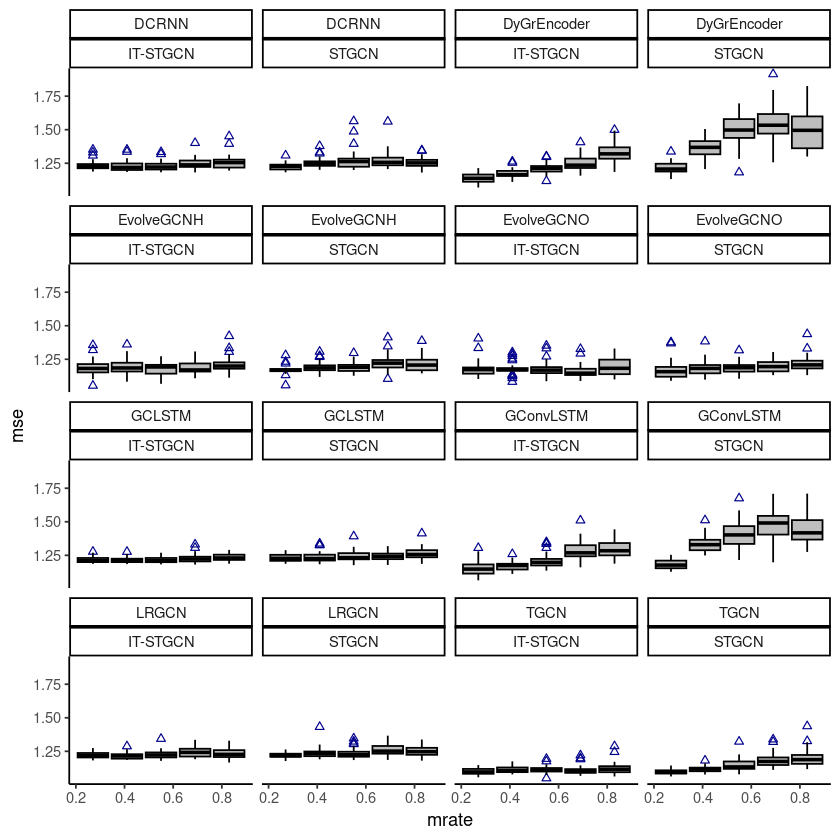
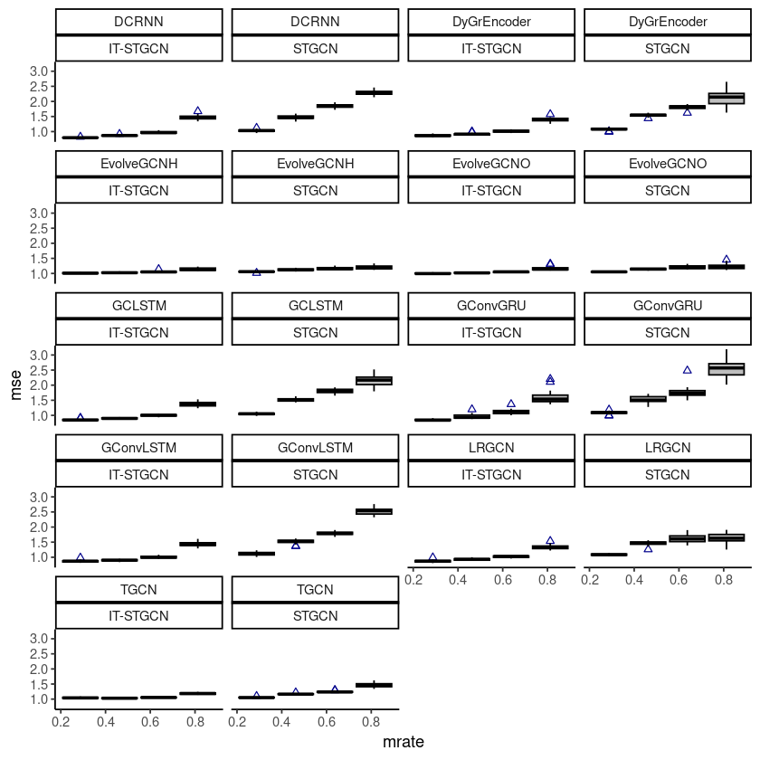
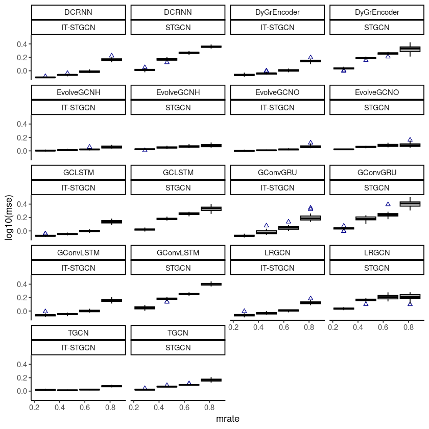

library(ggplot2)
library(dplyr)Import
df <- read.csv("./df_fig.csv")head(df)| X | dataset | method | mrate | mtype | lags | nof_filters | inter_method | epoch | mse | calculation_time | model | |
|---|---|---|---|---|---|---|---|---|---|---|---|---|
| <int> | <chr> | <chr> | <dbl> | <chr> | <int> | <dbl> | <chr> | <dbl> | <dbl> | <dbl> | <chr> | |
| 1 | 0 | fivenodes | STGCN | 0.0 | 2 | 12 | 50 | 0.7293743 | 80.98522 | GConvGRU | ||
| 2 | 1 | fivenodes | STGCN | 0.0 | 2 | 12 | 50 | 0.7290817 | 80.89179 | GConvGRU | ||
| 3 | 2 | fivenodes | STGCN | 0.7 | rand | 2 | 12 | linear | 50 | 1.8922616 | 81.97655 | GConvGRU |
| 4 | 3 | fivenodes | STGCN | 0.7 | rand | 2 | 12 | nearest | 50 | 2.2112885 | 87.80387 | GConvGRU |
| 5 | 4 | fivenodes | STGCN | 0.8 | rand | 2 | 12 | linear | 50 | 2.0728178 | 103.64874 | GConvGRU |
| 6 | 5 | fivenodes | STGCN | 0.8 | rand | 2 | 12 | nearest | 50 | 2.5664744 | 98.34010 | GConvGRU |
A data.frame: 6 × 12
fivenode
fivenodes <- data.frame(rbind(
df %>% filter(dataset=='fivenodes' & mtype=='rand' & inter_method == 'linear' & nof_filters==12 & lags==2 & epoch==50 & model=='GConvLSTM' &
( mrate == 0.3 | mrate == 0.5 |mrate == 0.6 | mrate == 0.7 | mrate == 0.8)),
df %>% filter(dataset=='fivenodes' & mtype=='rand' & inter_method == 'linear' & nof_filters==4 & lags==2 & epoch==50 & model=='GCLSTM' &
( mrate == 0.3 | mrate == 0.5 |mrate == 0.6 | mrate == 0.7 | mrate == 0.8)),
df %>% filter(dataset=='fivenodes' & mtype=='rand' & inter_method == 'linear' & nof_filters==4 & lags==2 & epoch==50 & model=='LRGCN' &
( mrate == 0.3 | mrate == 0.5 |mrate == 0.6 | mrate == 0.7 | mrate == 0.8)),
df %>% filter(dataset=='fivenodes' & mtype=='rand' & inter_method == 'linear' & nof_filters==12 & lags==2 & epoch==50 & model=='DyGrEncoder' &
( mrate == 0.3 | mrate == 0.5 |mrate == 0.6 | mrate == 0.7 | mrate == 0.8)),
df %>% filter(dataset=='fivenodes' & mtype=='rand' & inter_method == 'linear' & lags==2 & epoch==50 & model=='EvolveGCNH' &
( mrate == 0.3 | mrate == 0.5 |mrate == 0.6 | mrate == 0.7 | mrate == 0.8)),
df %>% filter(dataset=='fivenodes' & mtype=='rand' & inter_method == 'linear' & lags==2 & epoch==50 & model=='EvolveGCNO' &
( mrate == 0.3 | mrate == 0.5 |mrate == 0.6 | mrate == 0.7 | mrate == 0.8)),
df %>% filter(dataset=='fivenodes' & mtype=='rand' & inter_method == 'linear' & nof_filters==12 & lags==2 & epoch==50 & model=='TGCN' &
( mrate == 0.3 | mrate == 0.5 |mrate == 0.6 | mrate == 0.7 | mrate == 0.8)),
df %>% filter(dataset=='fivenodes' & mtype=='rand' & inter_method == 'linear' & nof_filters==2 & lags==2 & epoch==50 & model=='DCRNN' &
( mrate == 0.3 | mrate == 0.5 |mrate == 0.6 | mrate == 0.7 | mrate == 0.8))))후보 1
ggplot(fivenodes, aes(x=mrate,y= mse,group=mrate)) + facet_wrap(model~method) +
geom_boxplot(fill='grey',color='black',width=0.7,outlier.color = 'darkblue',outlier.shape = 2) + theme_classic()
# ggsave("random_list_fivenodes.png")Saving 6.67 x 6.67 in image
ChickenpoxDatasetLoader(lags=4)
chickenpox <- rbind(
df %>% filter(dataset=='chickenpox' & mtype=='rand' & inter_method == 'linear' & nof_filters==16 & lags==4 & epoch==50 & model=='GConvGRU' &
( mrate == 0.3 | mrate == 0.5 |mrate == 0.6 | mrate == 0.8)),
df %>% filter(dataset=='chickenpox' & mtype=='rand' & inter_method == 'linear' & nof_filters==32 & lags==4 & epoch==50 & model=='GConvLSTM' &
( mrate == 0.3 | mrate == 0.5 |mrate == 0.6 | mrate == 0.8)),
df %>% filter(dataset=='chickenpox' & mtype=='rand' & inter_method == 'linear' & nof_filters==16 & lags==4 & epoch==50 & model=='GCLSTM' &
( mrate == 0.3 | mrate == 0.5 |mrate == 0.6 | mrate == 0.8)),
df %>% filter(dataset=='chickenpox' & mtype=='rand' & inter_method == 'linear' & nof_filters==8 & lags==4 & epoch==50 & model=='LRGCN' &
( mrate == 0.3 | mrate == 0.5 |mrate == 0.6 | mrate == 0.8)),
df %>% filter(dataset=='chickenpox' & mtype=='rand' & inter_method == 'linear' & nof_filters==12 & lags==4 & epoch==50 & model=='DyGrEncoder' &
( mrate == 0.3 | mrate == 0.5 |mrate == 0.6 | mrate == 0.8)),
df %>% filter(dataset=='chickenpox' & mtype=='rand' & inter_method == 'linear' & lags==4 & epoch==50 & model=='EvolveGCNH' &
( mrate == 0.3 | mrate == 0.5 |mrate == 0.6 | mrate == 0.8)),
df %>% filter(dataset=='chickenpox' & mtype=='rand' & inter_method == 'linear' & lags==4 & epoch==50 & model=='EvolveGCNO' &
( mrate == 0.3 | mrate == 0.5 |mrate == 0.6 | mrate == 0.8)),
df %>%filter(dataset=='chickenpox' & mtype=='rand' & inter_method == 'linear' & nof_filters==12 & lags==4 & epoch==50 & model=='TGCN' &
( mrate == 0.3 | mrate == 0.5 |mrate == 0.6 | mrate == 0.8)),
df %>%filter(dataset=='chickenpox' & mtype=='rand' & inter_method == 'linear' & nof_filters==16 & lags==4 & epoch==50 & model=='DCRNN' &
( mrate == 0.3 | mrate == 0.5 |mrate == 0.6 | mrate == 0.8)))ggplot(chickenpox, aes(x=mrate,y= mse,group=mrate)) + facet_wrap(model~method,ncol=4) +
geom_boxplot(fill='grey',color='black',width=0.7,outlier.color = 'darkblue',outlier.shape = 2) + theme_classic()
PedalMeDatasetLoader (lags=4)
pedalme <- rbind(
df %>% filter(dataset=='pedalme' & mtype=='rand' & inter_method == 'linear' & nof_filters==12 & lags==4 & epoch==50 & model=='GConvGRU' &
( mrate == 0.3 | mrate == 0.5 |mrate == 0.6 | mrate == 0.8)),
df %>% filter(dataset=='pedalme' & mtype=='rand' & inter_method == 'linear' & nof_filters==2 & lags==4 & epoch==50 & model=='GConvLSTM' &
( mrate == 0.3 | mrate == 0.5 |mrate == 0.6 | mrate == 0.8)),
df %>% filter(dataset=='pedalme' & mtype=='rand' & inter_method == 'linear' & nof_filters==4 & lags==4 & epoch==50 & model=='GCLSTM' &
( mrate == 0.3 | mrate == 0.5 |mrate == 0.6 | mrate == 0.8)),
df %>% filter(dataset=='pedalme' & mtype=='rand' & inter_method == 'linear' & nof_filters==8 & lags==4 & epoch==50 & model=='LRGCN' &
( mrate == 0.3 | mrate == 0.5 |mrate == 0.6 | mrate == 0.8)),
df %>% filter(dataset=='pedalme' & mtype=='rand' & inter_method == 'linear' & nof_filters==12 & lags==4 & epoch==50 & model=='DyGrEncoder' &
( mrate == 0.3 | mrate == 0.5 |mrate == 0.6 | mrate == 0.8)),
df %>% filter(dataset=='pedalme' & mtype=='rand' & inter_method == 'linear' & lags==4 & epoch==50 & model=='EvolveGCNH' &
( mrate == 0.3 | mrate == 0.5 |mrate == 0.6 | mrate == 0.8)),
df %>% filter(dataset=='pedalme' & mtype=='rand' & inter_method == 'linear' & lags==4 & epoch==50 & model=='EvolveGCNO' &
( mrate == 0.3 | mrate == 0.5 |mrate == 0.6 | mrate == 0.8)),
df %>% filter(dataset=='pedalme' & mtype=='rand' & inter_method == 'linear' & nof_filters==12 & lags==4 & epoch==50 & model=='TGCN' &
( mrate == 0.3 | mrate == 0.5 |mrate == 0.6 | mrate == 0.8)),
df %>% filter(dataset=='pedalme' & mtype=='rand' & inter_method == 'linear' & nof_filters==8 & lags==4 & epoch==50 & model=='DCRNN' &
( mrate == 0.3 | mrate == 0.5 |mrate == 0.6 | mrate == 0.8)))ggplot(pedalme, aes(x=mrate,y= mse,group=mrate)) + facet_wrap(model~method,ncol=4) +
geom_boxplot(fill='grey',color='black',width=0.7,outlier.color = 'darkblue',outlier.shape = 2) + theme_classic()